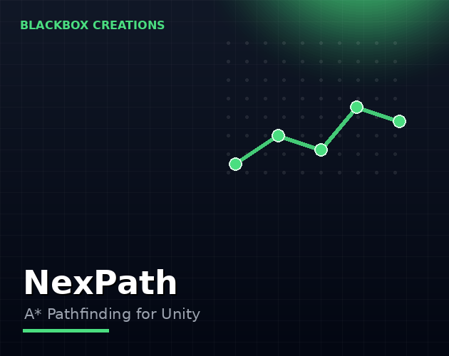

Tools / NexPath
Characters that walk into walls are not a feature. NexPath gives your Unity game fast A* grid pathfinding — agents that route around obstacles in 2D and 3D.
Instant download & priority support
One-time purchase · Instant download · Free minor updates
Buy nowAlso on the Unity Asset Store

For tile-based and grid-based games, A* is the right algorithm: optimal paths, predictable performance, easy debugging. NexPath packages it as a Unity-native system so you spend your time on gameplay, not graph theory.
Developers of strategy games, roguelikes, tower defense, tactics and RPGs — any Unity game where characters need to navigate around obstacles intelligently.
The idea is simple enough to explain in a minute. You lay a grid over your level — or your level already is a grid of tiles. Each cell is marked walkable or blocked. When an agent needs to move, A* searches the grid for the cheapest route from start to goal, weighing distance already traveled against estimated distance remaining, and returns a path: a list of cells the agent can follow. Obstacles just work, because blocked cells are never part of a valid path. NexPath packages that loop — grid, query, path, follow — as a Unity-native system, so your code asks for paths and moves agents instead of implementing graph search.
Unity's NavMesh is excellent for organic 3D terrain. But plenty of games are not organic terrain. Tile-based strategy games, roguelikes with procedural dungeons, tower defense maps, tactics grids, voxel worlds — these games think in cells, and forcing them onto a baked navmesh adds work instead of removing it. Grids are also trivially debuggable: you can see every cell, which makes a broken path a five-minute fix instead of a rebake-and-pray cycle. And when your world changes at runtime — walls built, bridges destroyed — updating grid cells beats rebaking a navmesh by a wide margin.
Static pathfinding is the easy part; games are dynamic. Units move, buildings go up, doors lock. NexPath handles dynamic navigation: mark cells blocked or free as the world changes and agents re-path around the new reality. For tower defense (towers block tiles), RTS (buildings reshape the map) and roguelikes (doors, traps, cave-ins), this is the difference between pathfinding that works in the trailer and pathfinding that works in the game.
Top-down 2D, isometric 2D, 3D grid movement — NexPath covers all three from the same system. That matters more than it sounds: many projects start 2D and add a 3D mode, or prototype in 2D before committing. One pathfinding tool across both saves you from ripping out navigation mid-project.
A practical way to evaluate NexPath in an afternoon: first, define your grid to match your game's natural unit — one cell per tile for tile games, a sensible world-space cell size for freeform maps. Second, mark your static obstacles and confirm agents route around them. Third, flip some cells at runtime — open a door, drop a barricade — and watch agents re-path. Fourth, spawn your realistic agent count and check frame timing. If those four steps behave, the tool fits your game; grid pathfinding either clicks with your design in the first hour or it was never the right approach.
Both. NexPath handles 2D grids (top-down, isometric) and 3D grid navigation.
Unity's NavMesh bakes navigation meshes; NexPath works on grids, which many game types (tiles, voxels, roguelikes) prefer for control and predictability.
Yes — dynamic navigation is a core feature. Change which cells are blocked at runtime and agents find new routes around the changes.
Pathfinding cost scales with grid size and agent count, like any A* implementation. Keep the grid tight around the actual play area rather than covering the whole world, and profile with your real agent counts — standard practice for grid pathfinding.
Yes — given the same grid and the same query, A* returns the same path every time. That predictability is one reason grid games prefer it: replays and debugging all get easier.